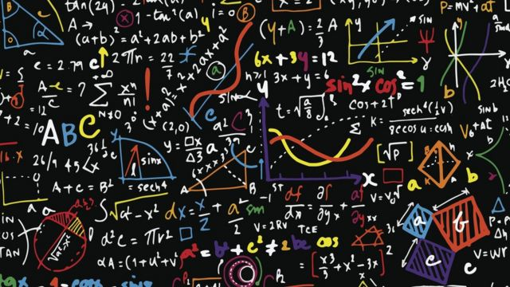
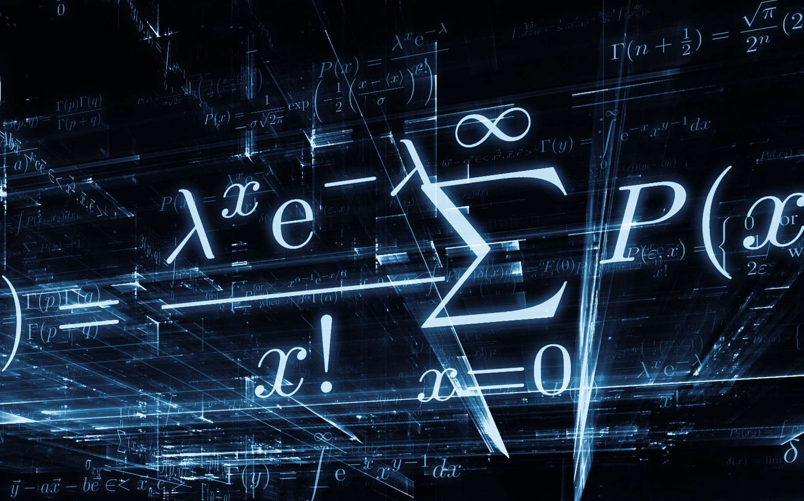

| September, 26, 2020 | ||
| H. Lebzoui | On Novikov pseudo-Riemannian algebras | Download slides |
| A. Awane | Polarized symplectic manifolds | Download slides |
| M. Sabak | Generating links that are both quasi-alternating and almost-alternating | Download slides |
| October, 26, 2020 | ||
| A. Bouarich | Homology spheres which are Seifert 3-manifolds : construction and classification | Download slides |
| M. Boucetta | On the completeness of left invariant pseudo-Riemannian metrics | Download slides |
| October, 31, 2020 | ||
| H. Abchir | On virtual knots | Download slides |
| W. Mansouri | Geometry of Fedosov Manifolds | Download slides |
| November, 14, 2020 | A. Bouarich | Homology spheres which are Seifert 3-manifolds : construction and classification (II) | Download slides |
| O. Tibssirte | Classification of Einstein Lorentzian metrics on 3-nilpotent simply connected Lie groups with nondegenerate center of dimension 1 | Download slides |
| November, 28, 2020 | I. AiBrik | k-para-Kahler Lie algebras a subclass of k-symplectic Lie algebras | Download slides |
| M. ElHamdadi | Introduction to quandle algebras | Download slides |
| December, 12, 2020 | M. Boucetta | Introduction to affine geometry | Download slides |
| M. Nabil | The group of affine transformations of a manifold | Download slides |
| December, 26, 2020 | F. Abid | Analytic Linear Lie racks | Download slides |
| Z. Saassai | A Laplace operator for Poisson manifolds | Download slides |
| Junuary, 16, 2021 | M. Boucetta | Flat Riemannian manifolds: The famous Bieberach's theorem | Download slides |
| M. Nabil | The affine group of an affine manifold | Download slides |
| Junuary, 30, 2021 | S. Benayadi | Left symmetric algebras and their radicals | Download slides |
| S. El Amine | Polarized Poisson structures | Download slides |
| February, 16, 2021 | A. Abouqateb | An Introduction to the Geometry of Homogeneous Manifolds | Download slides |
| H. Lebzioui | On Novikov algebras | Download slides |
| February, 27, 2021 | S. Benayadi | Left symmetric algebras and their radicals | Download slides |
| S. Lamsifer | About coverings of the exterior of a knot | Download slides |
| March, 13, 2021 | H. Lebzioui | On Novikov algebras | Download slides |
| Elhassan Idnarour | Some extensions in the theory of real division algebras | Download slides |
| March, 27, 2021 | A. Rochdi | Some problems on real division algebras | Download slides |
| Oufkou Ahemed | Geometry of Para-kähler Lie groups | Download slides |
| April, 17, 2021 | M. Boucetta | Supra-Flat Riemannian manifolds | Download slides |
| C. Bourzik | Affine submanifolds | Download slides |
| Mai, 8, 2021 | H. Abchir and M. Sabak | Construction of a wide family of 3-manifolds consolidating the L-space conjecture | Download slides |
| M. Bellaihou | Morphing curves | Download slides |
| Mai, 22, 2021 | Camille Laurent-Gengoux | Holomorphic Poisson structures | Download slides |
| S. Benayadi | Radicals of left symmetric algebras | Download slides |
| June, 6, 2021 | V. Nistor | Groupoids and integration of Lie algebroids | Download slides |
| A. Benroummane | Homogeneous semi-symmetric four dimensional manifolds | Download slides |
| June, 26, 2021 | Martin Bordemann | Multiplication of differential operators in connections terms in Lie-Rinehart algebras | Download slides |
| Viviana Delbarco | Uniqueness of ad-invariant metrics | Download slides |